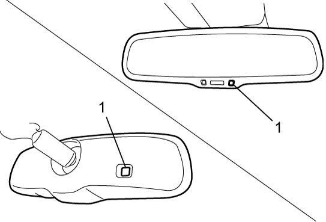
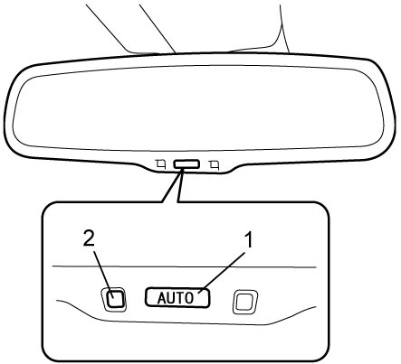

9E
| Inside Rear View Mirror Description |
Auto Dimming Rear View Mirror (If Equipped)
•Two sensors (1) located at front and rear sides of rear view mirror detect brightness to decrease reflection of clear headlights from vehicle behind you automatically by continuously changing liquid crystal density on mirror surface.
 •Auto dimming function can be turned on and off with switch.
•Auto dimming function can be turned on and off with switch.
•When shifted to “R” range, the auto dimming function is canceled even it is in operation.

 "Expand image")
•When shifted to “R” range, the auto dimming function is canceled even it is in operation.

 "Expand image")
| 1. | ON switch | 2. | Indicator |